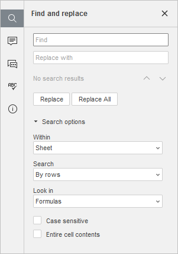

Funkcije pretrage i zamene
Da biste pretraživali potrebne karaktere, reči ili fraze u Spreadsheet Editor-u, kliknite na ikonu Pretrage koja se nalazi na levoj bočnoj traci, ikonu koja se nalazi u gornjem desnom uglu, ili koristite kombinaciju tastera Ctrl+F (Command+F za macOS) da biste otvorili mali panel za pronalaženje ili kombinaciju tastera Ctrl+H da biste otvorili kompletan panel za pronalaženje.
Mali Find panel će se otvoriti u gornjem desnom uglu radne površine. Panel sadrži polje za unos teksta za pretragu, broj rezultata pretrage i kontrole za prelazak na prethodni ili sledeći rezultat, kao i dugme za zatvaranje trake.

Da biste pristupili naprednim podešavanjima, kliknite na ikonu .
Otvoriće se panel Find and replace:

- Unesite upit u odgovarajuće polje za unos podataka Find.
- Da biste se kretali između pronađenih pojavljivanja, kliknite na jedno od dugmadi sa strelicama. Dugme prikazuje sledeće pojavljivanje, dok dugme prikazuje prethodno.
- Ako je potrebno da zamenite jedno ili više pojavljivanja pronađenih karaktera, unesite tekst za zamenu u odgovarajuće polje Replace with. Možete izabrati da zamenite samo trenutno izabrano pojavljivanje ili da zamenite sva pojavljivanja klikom na odgovarajuća dugmad Replace i Replace All. Dugme Replace se takođe može pronaći na kartici Home.
-
Navedite opcije pretrage označavanjem potrebnih opcija:
- Within – koristi se za pretragu samo unutar aktivnog Sheet-a, celog Workbook-a ili Specific range. U poslednjem slučaju, polje Select Data range će postati aktivno, gde možete navesti potrebni opseg.
- Search – koristi se za određivanje pravca pretrage: udesno by rows ili nadole by columns.
- Look in – koristi se za određivanje da li želite da pretražujete Value ćelija ili njihove osnovne Formulas.
-
Navedite parametre pretrage označavanjem potrebnih opcija ispod polja za unos:
- Case sensitive – koristi se za pronalaženje samo onih pojavljivanja koja su uneta sa istim velikim/malim slovima kao vaš upit (npr. ako je vaš upit „Editor“ i ova opcija je izabrana, reči kao što su „editor“ ili „EDITOR“ neće biti pronađene).
- Entire cell contents – koristi se za pronalaženje samo onih ćelija koje ne sadrže nikakve druge karaktere osim onih navedenih u vašem upitu (npr. ako je vaš upit „56“ i ova opcija je izabrana, ćelije koje sadrže podatke kao što su „0.56“ ili „156“ neće biti pronađene).
Sva pojavljivanja će biti istaknuta u fajlu i prikazana kao lista u Find panelu sa leve strane. Koristite listu da biste prešli na željeno pojavljivanje ili koristite dugmad za navigaciju i .